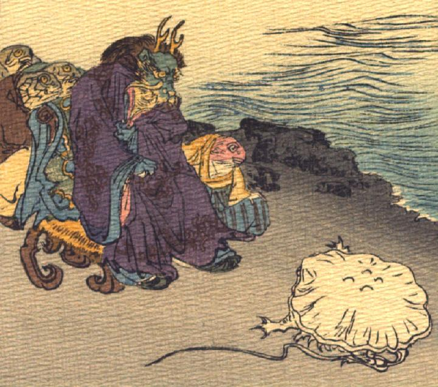

竜王の命令をうけるくらげ。竜王は椅子に座っており、その背後と脇にお供の魚たちをひかえさせている。くらげは地面にはいつくばっている。
著作者：J.Dautremer／出典：親書誌：U426_nichibunken_0107：La meduse simple et naïve／日付：2006／資源識別子：U426_nichibunken_0107_0004_0000
Copyright (c)2010- International Research Center for Japanese Studies, Kyoto, Japan. All rights reserved.